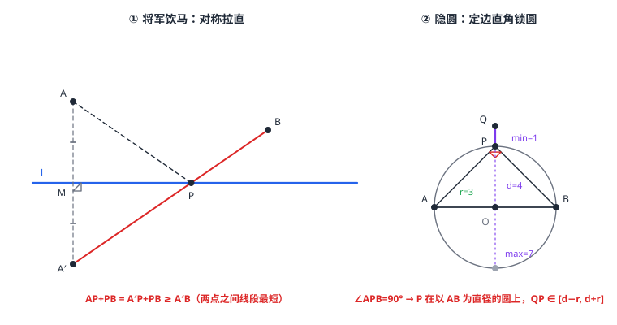

动点与最值问题（将军饮马·隐圆）
几何最值题的两把扳手都长在「两点之间线段最短」上：将军饮马用轴对称把折线 AP+PB 「拉直」——作 A 关于直线 l 的对称点 A'，AP+PB≥qslant A'B，等号当 P 落在线段 A'B 上时取得；造桥选址再用平移消掉定长桥段。隐圆模型则反过来「藏曲线」：动点到定点距离恒等于定长（或对定线段张直角），轨迹是一个不画出来的圆——把动点钉在圆上后，「圆外一点到圆上距离」的最值就是 d-r 与 d+r。化折为直、化动为圆，两招收口全章的变换工具。
| 所属主题 | 图形与变换 |
|---|---|
| 所属模块 | 几何 |
| 课标学段 | 第四学段（7~9 年级） |
| 前置知识 | 直角三角形与勾股定理、圆心角、弧与圆周角定理、点、直线与圆的位置关系、轴对称与中心对称、三角形的基本性质 |
| 核心素养 | 几何直观推理能力模型观念 |
教材定位
人民教育出版社《人教版（2024版）义务教育教科书·数学》
九年级上册第28章 旋转28.2 中心对称
落在九上 28.2 中心对称（对称作图是将军饮马的核心），隐圆模型则用到 29.2.3 圆周角定理。将军饮马与隐圆都是教材未单列的压轴专题，本篇定位到它们各自依赖的教材知识点上。
说明
公理地基：两点之间线段最短；连结直线外一点与直线上各点的所有线段中，垂线段最短；三角形两边之和大于第三边、两边之差小于第三边。所有「最值」最后都落在这三条公理上——目标永远是「把要求的量变成一条线段」。
将军饮马（化折为直）：直线 l 同侧两定点 A、B，动点 P 在 l 上，求 AP+PB 的最小值。作 A 关于 l 的对称点 A'（图 1 左）：对 l 上每一点都有 AP=A'P，于是 AP+PB=A'P+PB≥qslant A'B——等号当 P 在线段 A'B 上时成立。最小值 =A'B，马在 P 处下河饮完水再回营，总路程最短。
造桥选址（化折为直 + 平移）：河岸 l_1\parallel l_2，桥 PQ 垂直河岸且长 a 为定值，A、B 分居两岸，求 AP+PQ+QB 的最小值。把 A 沿桥的方向平移 a 得 A'，则 AP+PQ+QB=A'P+QB+a≥qslant A'B+a（当 P 在线段 A'B 上时取等）——定长桥段被平移「摘出去」，剩下的仍是将军饮马。
隐圆（化动为圆）：动点的轨迹不画出来、但由条件确定成一个圆。两个最常用的发生器：① 定点定长——OP=r 恒成立，P 在以 O 为圆心、r 为半径的圆上；② 定边直角——\angle APB=90^\circ（AB 定），P 在以 AB 为直径的圆上（圆周角定理的逆用，圆心角、弧与圆周角定理，图 1 右）。轨迹锁定成圆后，「圆外（内）一定点到圆上一点的距离」最值由点与圆的位置关系（点、直线与圆的位置关系）给出：最近 d-r、最远 d+r（d 为定点到圆心距离）。
使用场景
驿站与牧马：古将军带队从营地 A 出发，先到河边饮马，再抵达营地 B——河岸是直线、营地在同侧，最短总路线就是将军饮马的原型（名字即来历）。
无人机巡逻与雷达扫描：无人机到信号塔距离恒为 5 千米（定点定长），它在以塔为圆心、5 千米为半径的圆上巡航——求它离指挥所最近/最远的位置，就是隐圆最值。
注意点
将军饮马先判「同侧还是异侧」：两定点在直线同侧才需要作对称（异侧时 AP+PB≥qslant AB 直接连线，取等点即交点）——异侧题上来就作对称点反而绕远。
对称点要作对：作 A 关于 l 的对称点 A'，就把 AP 整段换成 A'P（AP=A'P），PB 原样保留；只换一半、或对称了 A 却去换 PB，折线就接不上。检验办法：换完后 A'、P、B 应能连成一条直线（图 1 左红线）。
隐圆模型先验「动点是否真的被钉死在圆上」：\angle APB=90^\circ 要求 P≠q A、P≠q B（直径端点处角无定义），所以「到圆上最近距离 d-r」若恰好只在端点取得，要说明是「逼近而不达到」还是确实有别的取点——严谨题里最近点应取在 A、B 之外的位置（例 3 的最近点 (0,\ 3) 不在 A、B 处，安全）。
证明

图 1：左——将军饮马：对称点 A′ 拉直折线，最小值 = A′B；右——隐圆：∠APB=90° 把 P 钉在以 AB 为直径的圆上，圆外定点 Q 到圆上距离最值 = d∓r
证明
结论 1将军饮马模型：A' 是 A 关于 l 的对称点时，AP+PB≥qslant A'B，等号当且仅当 P 在线段 A'B 上。
设 A' 是 A 关于 l 的对称点，P 为 l 上任意一点。对称轴垂直平分 AA'，l 上每点到 A、A' 距离相等（尺规作图 的中垂线性质），故 AP=A'P，AP+PB=A'P+PB。路径 A'\to P\to B 是一条折线，而两点之间线段最短：A'P+PB≥qslant A'B，等号当且仅当 P 落在线段 A'B 上（图 1 左红线）。
关键一步依据是垂直平分线的性质（尺规作图）加上「两点之间线段最短」：l 是 AA' 的垂直平分线，所以 l 上任一点 P 到 A、A' 距离相等，AP 才能换成 A'P，路径长保持不变。随后用的是两点之间线段最短：A'\to P\to B 是折线，其长度不小于直线段 A'B，等号当且仅当三点共线且 P 在 A'B 之间。
结论 2等号能取到：P 取 l 与线段 A'B 的交点时，最小值就是 A'B。
P 是 l 与线段 A'B 的交点——存在且唯一（A' 与 B 分居 l 两侧，线段必穿过 l）。所以最小值不只是「大于等于」，而是可以取到的 A'B。
关键一步依据是「线段与直线的位置关系」：A 与 A' 关于 l 对称，A' 与 B 分居 l 两侧，所以线段 A'B 必与 l 相交，交点存在且唯一。于是下界不是一句空话，而是实实在在能达到的最小值 A'B——这正是「化归为两点之间距离」比直接硬算要省力的原因。
结论 3造桥选址：桥的长度和方向固定时，把 A 平移成 A'=A+(0,\ a) 就有 AP+PQ+QB≥qslant A'B+a，等号当 Q 在线段 A'B 上。
桥向量 \vecPQ=(0,\ a) 固定。把 A 平移成 A'=A+(0,\ a)，则 AP=A'Q（两线段是同一向量下的平移对应），于是 AP+PQ+QB=A'Q+QB+a≥qslant A'B+a——等号当 Q 在线段 A'B 上。定长 a 是「常数项」，平移把它提出来后剩下的又回到线段最短。
关键一步依据是「平移消元」：桥的长度和方向都是固定的，把 A 沿同一方向平移同样距离得 A'，AP 与 A'Q 是同一次平移下的对应线段，所以 AP=A'Q，于是总长 AP+PQ+QB 中的 PQ 被拆成 A'Q 与常数 a，剩下的问题又回到「两点之间线段最短」：A'Q+QB≥qslant A'B。定长 a 是常数项，平移把它提出来后不影响取等条件。
结论 4定边定角求轨迹：\angle APB=90^\circ 时 P 的轨迹是以 AB 为直径的圆（去掉 A、B 两点）；锁定这个圆后，定点 Q 到圆上动点 P 的距离满足 |QO-r|≤qslant QP≤qslant QO+r，最值在三点共线时取到。
设 \angle APB=90^\circ，O 为 AB 中点。直角三角形斜边上的中线等于斜边一半（圆的概念与垂径定理）：OP=\tfrac12 AB，为定值——P 到定点 O 距离恒等于定长 \tfracAB2，轨迹是以 AB 为直径的圆（去掉 A、B 两点）。反之，直径上的圆周角是直角（圆心角、弧与圆周角定理），圆上（除端点外）每点都满足 \angle APB=90^\circ——条件与轨迹严丝合缝。锁定圆后，定点 Q 到圆上动点 P 的距离满足 |QO-r|≤qslant QP≤qslant QO+r——这正是三角形三边关系（两边之和大于等于第三边、两边之差小于等于第三边，等号都在三点共线时取得，三角形的基本性质）：Q、O、P 三点共线时取到两端，最值就是 d\mp r。
关键一步依据是直角三角形斜边上的中线等于斜边的一半（圆的概念与垂径定理）：O 是 AB 中点，所以 OP=\tfrac12 AB 是定长，P 到定点 O 的距离被锁死，轨迹就是以 O 为圆心、\tfracAB2 为半径的圆——也就是以 AB 为直径的圆；反过来「直径上的圆周角是直角」（圆心角、弧与圆周角定理）保证圆上每点都满足条件，条件与轨迹正好吻合。锁定圆后，QP 的取值范围由三角形三边关系（三角形的基本性质）给出：两边之和大于等于第三边、两边之差小于等于第三边，等号都在三点共线时取得，故最值是 d\mp r。
动手实验
在方格纸上画一条水平直线 l，在上方标 A(0,\ 1)、B(4,\ 2)。作 A 关于 l 的对称点 A'(0,\ -1)，连 A'B 与 l 交于 P。用尺量：AP+PB 应等于 A'B=5；再把 P 在 l 上左右挪动各量一次，AP+PB 都大于 5——「拉直」的威力眼见为实。第二步画 O 为圆心、半径 3 的圆与圆外点 Q(0,\ 4)：在圆周上取七八个点，逐个量到 Q 的距离，记录最大最小——最大趋近 7（对侧最远点），最小趋近 1（同侧最近点），恰是 d± r。
解题思路
将军饮马四步：判同异侧 → 作对称点（滑动折线起点的定点）→ 连「对称点—另一定点」交 l 定 P → 算最小值（勾股或坐标距离公式）。
造桥选址三步：平移 A（沿桥方向、桥长距离）→ 连 A'B 定桥位 → 最小值 =A'B+ 桥长。
隐圆三步：识别发生器（定点定长 / 定边定角）→ 写出轨迹圆（圆心、半径）→ 用点与圆位置关系（d 与 r 比较）报最值 d\mp r；若问面积、线段最值，再在「最远/最近位置」上勾股细算。
按场景的例题
例 1（场景：行程与速度） 营地的饮马最短路线
笔直的河流是 x 轴，营地 A(0,\ 1) 与 B(4,\ 2) 在河同侧。牧马人从 A 出发到河边点 P 处饮马，再返回 B。求 AP+PB 的最小值，并求取得最小值时 P 的坐标。
解：同侧两点 → 将军饮马。作 A 关于 x 轴的对称点 A'(0,\ -1)，则 AP+PB=A'P+PB≥qslant A'B。A'B=\sqrt(4-0)^2+(2-(-1))^2=\sqrt16+9=5。等号要求 P 在线段 A'B 上：直线 A'B 过 (0,\ -1)、(4,\ 2)，令 y=0：x=\tfrac43，故 P≤ft(\tfrac43,\ 0)。验证：AP=\sqrt\tfrac169+1=\tfrac53，PB=\sqrt\tfrac649+4=\tfrac103，和恰为 5 \checkmark。
答：最小值 5；P≤ft(\tfrac43,\ 0)。
例 2（场景：测量与工程） 平行河面上的造桥选址
一条河两岸平行：北岸为直线 y=2，南岸为 y=0，桥必须垂直于河岸、长为 2（即桥连接南岸点 P 与北岸点 Q，PQ=2）。村庄 A(0,\ -3) 在南岸南侧，村庄 B(6,\ 7) 在北岸北侧。求从 A 沿最短路径「到 P、过桥到 Q、再到 B」的总路程，并求桥应建的位置（P 的坐标）。
解：总路程 =AP+QB+2（桥段 PQ 定长，先摘出去）。设桥建在横坐标 t 处：P(t,\ 0)、Q(t,\ 2)，则 AP=\sqrtt^2+3^2（A 低于南岸 3），QB=\sqrt(6-t)^2+5^2（B 高于北岸 5）。用平移把两段路「放到同一条岸上比」：Q(t,\ 2) 到 B(6,\ 7) 的距离，把两端同时下移 2，等于 P(t,\ 0) 到 B_1(6,\ 5) 的距离（对应分量之差同为 (6-t,\ 5)）。于是 AP+QB 就是南岸动点 P(t,\ 0) 到 A(0,\ -3)（岸下）与 B_1(6,\ 5)（岸上）的距离之和——两定点异侧，不必作对称，线段直接拉直：AP+QB≥qslant AB_1=\sqrt6^2+8^2=10。取等时 P 为线段 AB_1 与南岸的交点：直线 (0,\ -3)\to(6,\ 5) 在 y=0 处 x=\tfrac94，桥建在 P≤ft(\tfrac94,\ 0)、Q≤ft(\tfrac94,\ 2)。最短总路程 =10+2=12。验证：AP=\sqrt\tfrac8116+9=\tfrac154，QB=\sqrt\tfrac22516+25=\tfrac254，\tfrac154+\tfrac254+2=12 \checkmark。
答：最短总路程 12；桥建在 P≤ft(\tfrac94,\ 0)、Q≤ft(\tfrac94,\ 2)（横坐标 x=\tfrac94 处）。
例 3（场景：生活优化） 无人机巡航圆轨迹上的最远最近
线段 AB 两端 A(-3,\ 0)、B(3,\ 0)，动点 P 满足 \angle APB=90^\circ。指挥所 Q(0,\ 4)。求线段 QP 长度的最大值与最小值。
解：\angle APB=90^\circ 且 AB 定长 → P 在以 AB 为直径的圆上（隐圆，图 1 右）：圆心 O(0,\ 0)（AB 中点），半径 r=3。QO=\sqrt0+16=4>r，Q 在圆外。圆外定点到圆上动点的距离：最大 =QO+r=4+3=7（P 在 QO 反向延长线上，即 (0,\ -3)），最小 =QO-r=4-3=1（P 在 QO 连线上圆与 Q 之间，即 (0,\ 3)）。验证最近点：P(0,\ 3) 处 \angle APB：\vecPA=(-3,\ -3)、\vecPB=(3,\ -3)，数量积 -9+9=0，确为直角 \checkmark。
答：最大值 7，最小值 1。
常用推论
将军饮马的全部变体共用一个内核「用对称/平移换掉滑动的那段」：两点同侧（一次对称）、异侧（直接连线）、造桥（平移消定长）、二次对称型（两条直线轮流反射）——先问「哪一段在动」，就对哪一段动手。
隐圆的发生器不止两个：定边定角（\angle APB=\alpha 恒定，P 在以 AB 为弦、圆周角为 \alpha 的弧上，半径 =\tfracAB2\sin\alpha）、定点定长（到圆心距恒为 r）——识别的关键词是「恒、定」二字：条件里出现恒定的角或恒定的距离，轨迹就是圆或弧。
最值题的「取等检验」是完整答案的一部分：算完 d\mp r 或 A'B 后，回头确认取等位置确实合法（在直线上、在圆上且不在被剔除的端点）——不少「最值」其实只是下界，取不到等号（如动点限制在某段弧上时）。
易错点
错A、B 在直线 l 异侧，求 AP+PB 最小值：作 A 的对称点 A'，最小值为 A'B。
为什么错异侧时线段 AB 本身就与 l 有交点，AP+PB≥qslant AB 直接取等；对称一圈算出的 A'B 反而绕远（等于把 B 翻过去再连）。对称只救「同侧」。
正确异侧：最小值 =AB；同侧：作对称点后最小值 =A'B。
错造桥选址忘了桥长，答案只报 A'B。
为什么错平移把定长桥段「提出来」是代数操作，不是消灭它：总路程 =A'B+ 桥长，桥长是常数项，必须加回。
正确总路程最小值 =A'B+a（a 为桥长）。
错见「\angle APB=90^\circ、AB=6」直接答「P 到 AB 中点距离为 3，所以 QP 最小值是 3」。
为什么错3 是半径（P 到圆心的距离），不是 Q 到 P 的距离。QP 的最值取决于 Q 到圆心的距离 d：最近 d-r、最远 d+r——把「半径」当「最近距离」混淆了圆心和定点两个不同参照。
正确先算 d=QO，再报最小 d-3、最大 d+3。
直观理解
最值题是「拉直与画圆」两大手艺：折线最短的路，把弯的那段翻个身（对称）或挪个位（平移），让它和剩下的路拼成一条直线——两点之间线段最短，一锤定音（图 1 左：红直线 A'B 就是拉直后的最短总路程）。动点找不到轨迹时，看它身上有没有「恒定」的东西——到某点距离恒定、对某线段张角恒定，恒定即圆：动点其实一直被一根看不见的绳子拴着在圆上跑（图 1 右：直角把 P 拴在以 AB 为直径的圆上）。拉直对付折线，隐圆对付动点——两把扳手，都是从变换（对称、平移）与圆这两章的工具箱里现取的。